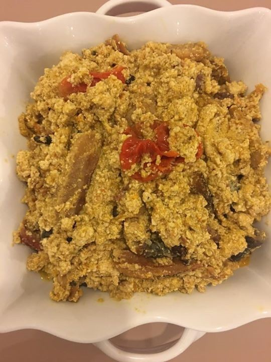

mbika
Le mbika est un plat riche et savoureux, apprécié pour ses textures crémeuses et ses saveurs profondes. Les
graines de courge moulues donnent une consistance unique à la sauce, qui se marie bien avec les différents
types de protéines et de légumes utilisés.
Ingrédients :
- 2 tasses de graines de courge moulues (mbika)
- 1 kg de viande (bœuf, chèvre, poulet, ou poisson fumé)
- 2 oignons
- 3 tomates
- 3 gousses d'ail
- 1 poivron vert
- 1 bouquet d'épinards ou de feuilles de manioc (facultatif)
- 1 piment (facultatif)
- 1/2 tasse d'huile de palme rouge ou d'huile de votre choix
- Sel et poivre au goût
- 1 cube de bouillon (facultatif)
- 4 tasses d'eau
Instructions
- Si vous avez des graines de courge entières, commencez par les rôtir légèrement à sec dans une poêle
pour libérer leur arôme, puis laissez-les refroidir et moulez-les finement. Si vous utilisez des graines
de courge moulues, vous pouvez sauter cette étape.
- Nettoyez et coupez la viande ou le poisson en morceaux.
- Faites cuire la viande ou le poisson dans une casserole avec un peu d'eau, du sel, du poivre, et un cube
de bouillon jusqu'à ce qu'ils soient tendres. Réservez.
- Hachez finement les oignons, les tomates, le poivron, l'ail, et le piment (si utilisé).
- Dans une grande marmite, faites chauffer l'huile de palme à feu moyen.
- Ajoutez les oignons et l'ail, et faites revenir jusqu'à ce qu'ils soient translucides.
- Ajoutez les tomates, le poivron, et le piment, et faites revenir quelques minutes jusqu'à ce que les
légumes soient tendres
- Ajoutez les graines de courge moulues et mélangez bien. Faites cuire en remuant constamment pendant
quelques minutes pour permettre aux graines de courge de libérer leur huile naturelle et d'épaissir la
sauce.
- Ajoutez l'eau à la marmite et mélangez bien pour obtenir une consistance homogène.
- Ajoutez la viande ou le poisson cuits à la sauce et mélangez bien
- Laissez mijoter à feu doux pendant environ 20 à 30 minutes, en remuant de temps en temps. La sauce doit
épaissir et les saveurs doivent bien se mélanger.
- Si vous utilisez des épinards ou des feuilles de manioc, ajoutez-les à la marmite et laissez cuire
jusqu'à ce qu'ils soient tendres.
- Goûtez et ajustez l'assaisonnement avec du sel et du poivre selon votre goût.
- Servez le mbika chaud, accompagné de riz, de fufu, de plantains frits, ou de manioc.